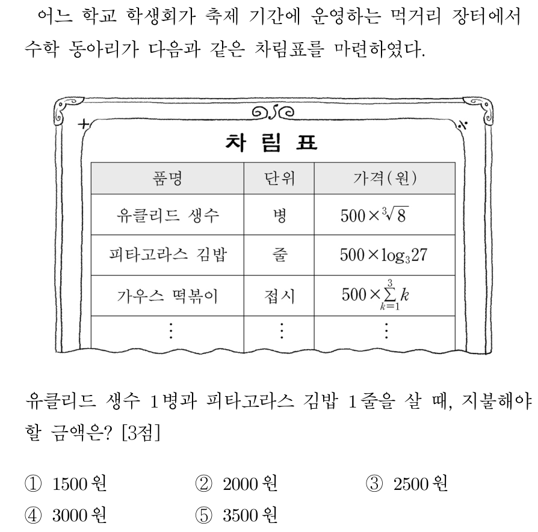

대수 3점 세트 01
2021 6월 가형 12번1. 자연수 $n$이 $2\le n\le 11$일 때, $-n^2+9n-18$의 $n$제곱근 중에서 음의 실수가 존재하도록 하는 모든 $n$의 값의 합은? [3점]
① 31 ② 33 ③ 35 ④ 37 ⑤ 39
2012 수능 나형 4번2. 
2011 9월 나형 26번3. $1\le m\le 3$, $1\le n\le 8$인 두 자연수 $m$, $n$에 대하여 $\sqrt[3]{n^m}$이 자연수가 되도록 하는 순서쌍 $(m, n)$의 개수는? [3점]
① 6 ② 8 ③ 10 ④ 12 ⑤ 14
2008 수능 나형 4번4. $a=\sqrt{2}$, $b^3=\sqrt{3}$일 때, $(ab)^2$의 값은? (단, $b$는 실수이다.) [3점]
① $2\cdot3^{\frac{1}{3}}$ ② $2\cdot3^{\frac{2}{3}}$ ③ $2^{\frac{1}{2}}\cdot3^{\frac{1}{3}}$ ④ $3\cdot2^{\frac{1}{3}}$ ⑤ $3\cdot2^{\frac{2}{3}}$
2013 9월 나형 6번5. $\left(\sqrt{2\sqrt[3]{4}}\right)^3$보다 큰 자연수 중 가장 작은 것은? [3점]
① 4 ② 6 ③ 8 ④ 10 ⑤ 12
2014 6월 B형 24번6. 지면으로부터 $H_1$인 높이에서 풍속이 $V_1$이고 지면으로부터 $H_2$인 높이에서 풍속이 $V_2$일 때, 대기 안정도 계수 $k$는 다음 식을 만족시킨다.
$$V_2=V_1\times\left(\frac{H_2}{H_1}\right)^{\frac{2}{2-k}}$$
(단, $H_1<H_2$이고, 높이의 단위는 m, 풍속의 단위는 m/초이다.)
A지역에서 지면으로부터 12m와 36m인 높이에서 풍속이 각각 2(m/초)와 8(m/초)이고, B지역에서 지면으로부터 10m와 90m인 높이에서 풍속이 각각 $a$(m/초)와 $b$(m/초)일 때, 두 지역의 대기 안정도 계수 $k$가 서로 같았다. $\dfrac{b}{a}$의 값을 구하시오. (단, $a$, $b$는 양수이다.) [3점]
2011 6월 나형 22번7. $a=\log_2(2+\sqrt{3})$일 때, $4^a+\dfrac{4}{2^a}$의 값을 구하시오. [3점]
2011 9월 가형 6번8. 양수기로 물을 끌어올릴 때, 펌프의 1분당 회전수 $N$, 양수량 $Q$, 양수할 높이 $H$와 양수기의 비교회전도 $S$ 사이에는 다음과 같은 관계가 있다고 한다.
$$S=NQ^{\frac{1}{2}}H^{-\frac{3}{4}}$$
(단, $N$, $Q$, $H$의 단위는 각각 rpm, m$^3$/분, m이다.)
펌프의 1분당 회전수가 일정한 양수기에 대하여 양수량이 24, 양수할 높이가 5일 때의 비교회전도를 $S_1$, 양수량이 12, 양수할 높이가 10일 때의 비교회전도를 $S_2$라 하자. $\dfrac{S_1}{S_2}$의 값은? [3점]
① $2^{\frac{3}{4}}$ ② $2^{\frac{7}{8}}$ ③ 2 ④ $2^{\frac{9}{8}}$ ⑤ $2^{\frac{5}{4}}$
2010 6월 나형 4번9. 실수 $a$가 $\dfrac{2^a+2^{-a}}{2^a-2^{-a}}=-2$를 만족시킬 때, $4^a+4^{-a}$의 값은? [3점]
① $\frac{5}{2}$ ② $\frac{10}{3}$ ③ $\frac{17}{4}$ ④ $\frac{26}{5}$ ⑤ $\frac{37}{6}$
2010 9월 나형 26번10. 양의 실수 전체의 집합에서 연산 $*$을
$$a*b=a^b\,b^{-\frac{a}{2}}$$
으로 정의하자. $(2*4)*x=8x^{-2}$일 때, $x$의 값은? [3점]
① $\frac{1}{2}$ ② $\frac{3}{4}$ ③ 1 ④ $\frac{5}{4}$ ⑤ $\frac{3}{2}$
2010 수능 가형 10번11. 조개류는 현탁물을 여과한다. 수온이 $t$(℃)이고 개체중량이 $w$(g)일 때, A 조개와 B 조개가 1시간 동안 여과하는 양(L)을 각각 $Q_{\mathrm{A}}$, $Q_{\mathrm{B}}$라고 하면 다음과 같은 관계식이 성립한다고 한다.
$$Q_{\mathrm{A}}=0.01\,t^{1.25}w^{0.25},\qquad Q_{\mathrm{B}}=0.05\,t^{0.75}w^{0.30}$$
수온이 20℃이고 A 조개와 B 조개의 개체중량이 각각 8g일 때, $\dfrac{Q_{\mathrm{A}}}{Q_{\mathrm{B}}}$의 값은 $2^a\times5^b$이다. $a+b$의 값은? (단, $a$, $b$는 유리수이다.) [3점]
① 0.15 ② 0.35 ③ 0.55 ④ 0.75 ⑤ 0.95
2009 9월 나형 20번12. 두 실수 $a$, $b$가 $3^{a+b}=4$, $2^{a-b}=5$를 만족할 때, $3^{a^2-b^2}$의 값을 구하시오. [3점]
2005 수능 가형 5번13. <보기>에서 옳은 것을 모두 고른 것은? [3점]
<보기>
ㄱ. $2^{\log_2 1+\log_2 2+\log_2 3+\cdots+\log_2 10}=10!$
ㄴ. $\log_2(2^1\times2^2\times2^3\times\cdots\times2^{10})^2=55^2$
ㄷ. $(\log_2 2^1)(\log_2 2^2)(\log_2 2^3)\cdots(\log_2 2^{10})=55$
① ㄱ ② ㄴ ③ ㄷ ④ ㄱ, ㄷ ⑤ ㄱ, ㄴ, ㄷ
2004 수능 인문계 30번14. $\log_2 7$의 정수 부분을 $a$, 소수 부분을 $b$라 할 때, $3^a+2^b$의 값을 소수점 아래 둘째 자리까지 구하시오. (단, $0\le b<1$이다.) [3점]
2003 모평 인문계 7번15. 다음 식의 값은? [3점]
$$\frac{1}{2^{-100}+1}+\frac{1}{2^{-99}+1}+\cdots+\frac{1}{2^{-1}+1}+\frac{1}{2^0+1}+\frac{1}{2^1+1}+\cdots+\frac{1}{2^{99}+1}+\frac{1}{2^{100}+1}$$
① 50 ② $\frac{101}{2}$ ③ 100 ④ $\frac{201}{2}$ ⑤ 200
1999 수능 예체능계 7번16. $2^a=c$, $2^b=d$일 때 $\left(\dfrac{1}{2}\right)^{2a+b}$과 같은 것은? [3점]
① $\frac{1}{cd}$ ② $\frac{1}{2cd}$ ③ $\frac{1}{c^2d}$ ④ $-cd$ ⑤ $-2cd$
2027 9월 16번17. 방정식 $\log_3(x-3)=\log_9(2x-3)$을 만족시키는 실수 $x$의 값을 구하시오. [3점]
2026 6월 16번18. 방정식 $\log_5(x+1)+\log_5(x-1)=\log_{25}9$를 만족시키는 실수 $x$의 값을 구하시오. [3점]
2026 9월 8번19. 두 양수 $a$, $b$가
$$\log_{\sqrt{2}}a+\log_2 b=2,\quad \log_2 a+\log_2 b^2=7$$
을 만족시킬 때, $a\times b$의 값은? [3점]
① 2 ② 4 ③ 8 ④ 16 ⑤ 32
2026 수능 6번20. 1보다 큰 두 실수 $a$, $b$가
$$\log_a b=3,\quad \log_3\frac{b}{a}=\frac{1}{2}$$
을 만족시킬 때, $\log_9 ab$의 값은? [3점]
① $\frac{3}{8}$ ② $\frac{1}{2}$ ③ $\frac{5}{8}$ ④ $\frac{3}{4}$ ⑤ $\frac{7}{8}$
대수 3점 세트 01 — 정답
| 번호 | 정답 | 출처 | 성취기준 |
|---|
| 1 | ① | 2021 6월 가형 12번 | 12대수01-01 |
| 2 | ③ | 2012 수능 나형 4번 | 12대수01-01 |
| 3 | ④ | 2011 9월 나형 26번 | 12대수01-01 |
| 4 | ① | 2008 수능 나형 4번 | 12대수01-01 |
| 5 | ② | 2013 9월 나형 6번 | 12대수01-02 |
| 6 | 16 | 2014 6월 B형 24번 | 12대수01-03 |
| 7 | 15 | 2011 6월 나형 22번 | 12대수01-03 |
| 8 | ⑤ | 2011 9월 가형 6번 | 12대수01-03 |
| 9 | ② | 2010 6월 나형 4번 | 12대수01-03 |
| 10 | ⑤ | 2010 9월 나형 26번 | 12대수01-03 |
| 11 | ② | 2010 수능 가형 10번 | 12대수01-03 |
| 12 | 25 | 2009 9월 나형 20번 | 12대수01-03 |
| 13 | ① | 2005 수능 가형 5번 | 12대수01-03 |
| 14 | 10.75 | 2004 수능 인문계 30번 | 12대수01-03 |
| 15 | ④ | 2003 모평 인문계 7번 | 12대수01-03 |
| 16 | ③ | 1999 수능 예체능계 7번 | 12대수01-03 |
| 17 | 6 | 2027 9월 16번 | 12대수01-04 |
| 18 | 2 | 2026 6월 16번 | 12대수01-04 |
| 19 | ③ | 2026 9월 8번 | 12대수01-04 |
| 20 | ② | 2026 수능 6번 | 12대수01-04 |